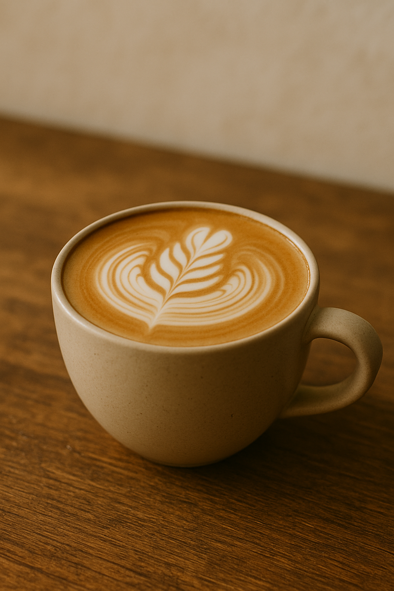
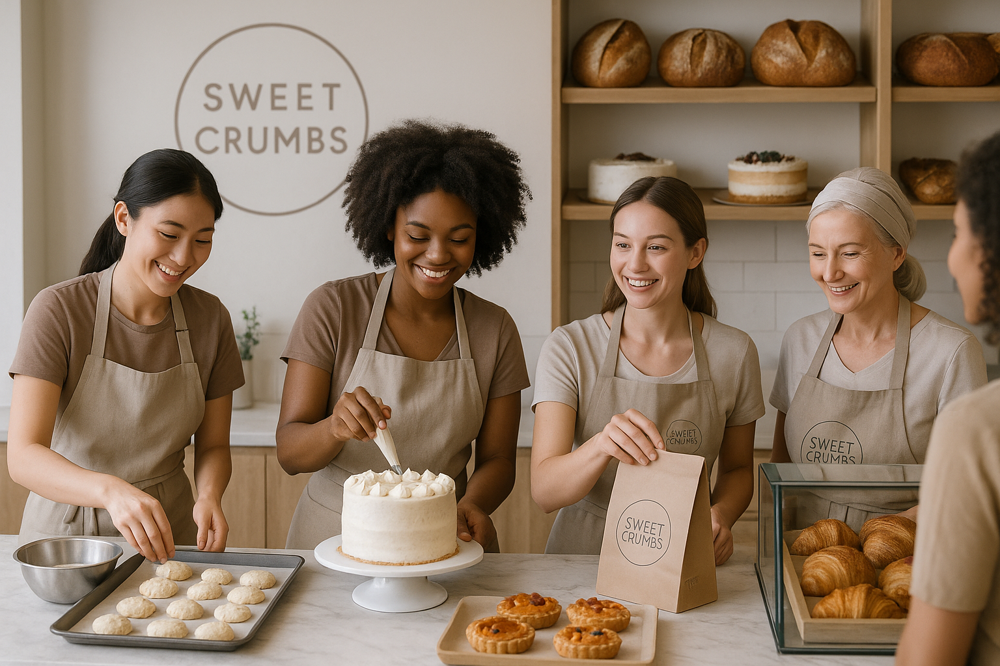
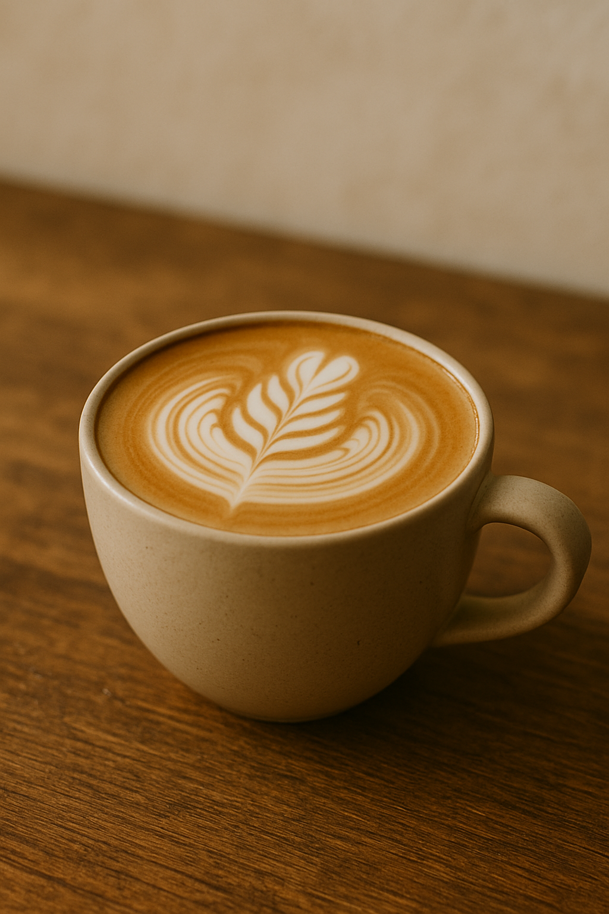
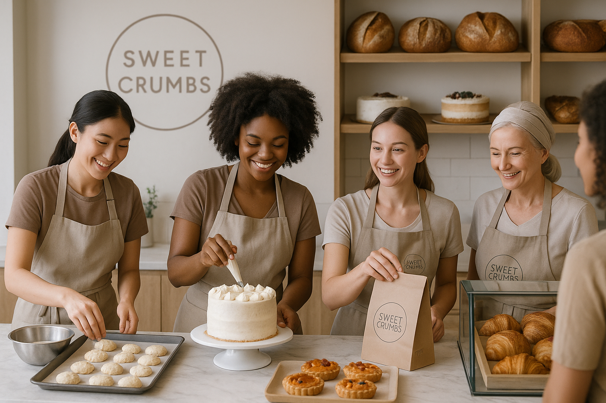
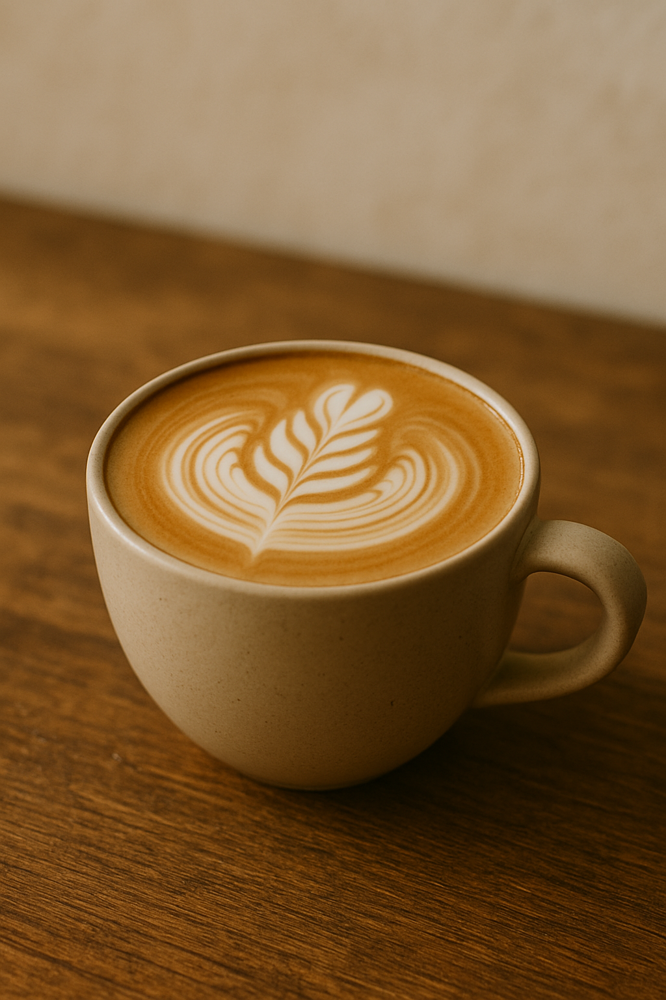
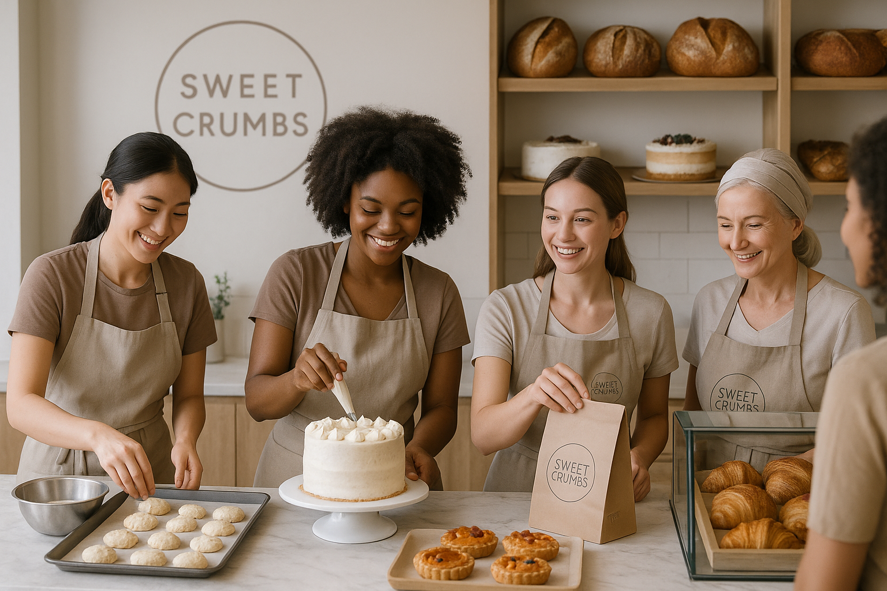

Мечта, ставшая реальностью
Это началось с девочки, которая мечтала открыть уютную пекарню в Санкт-Петербурге. Она любила запах свежевыпеченного хлеба и вкус теплого круассана. После многих лет обучения, путешествий и экспериментов на кухне, её мечта сбылась — и так родилась Sweet Crumbs.


В Sweet Crumbs работает небольшая, но страстная команда пекарей, бариста и друзей, которые верят в качество, гостеприимство и утреннюю магию. Мы создаём выпечку с душой и кофе с любовью — ради вас.